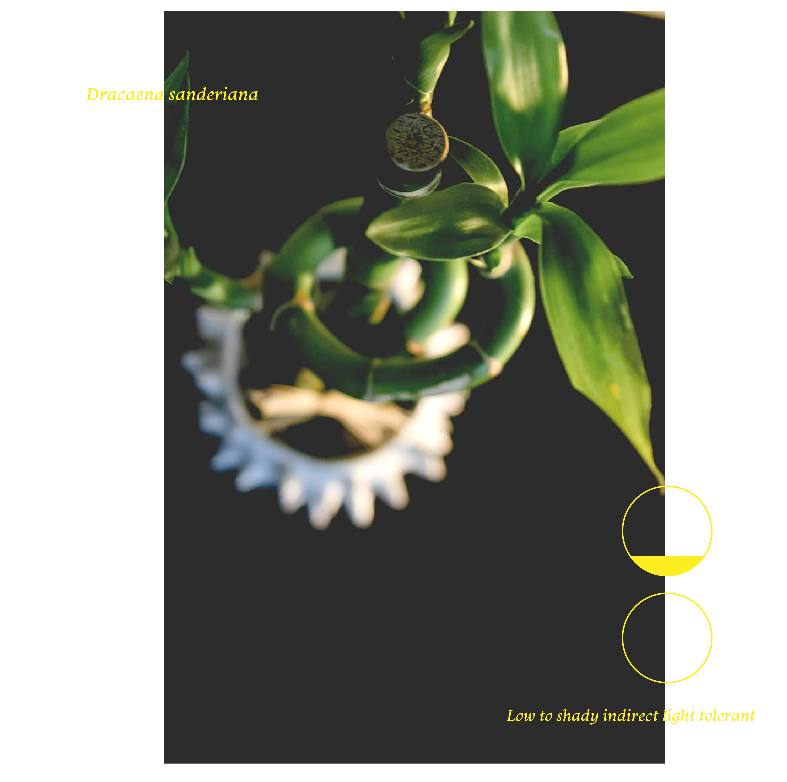

<!DOCTYPE html>
<html lang="en"></html>
<head>
    <meta charset+"UTF-8"
    <meta name+"viewport
    content=width=device-width, initial-scale=1.0" />
    <title>Low Light Houseplants-Lucky Bamboo</title>
    <style>
        body {
          background-image: url('luckybamboo-background.jpg');
          background-attachment: fixed;
          background-repeat: no-repeat;
          background-size: cover;
        }
    </style>
</head>
<body>
    <main class="grid-2">
        <section>
          <div class="grid-2 inner-grid">
            <div style="float: right;">
                
            </div>
            <div style="align: left;">
                
              </div>
            <p>Dracaena sanderiana is a species of flowering plant in the family Asparagaceae, native to Central Africa.[2] It was named after the German–English gardener Henry Frederick Conrad Sander (1847–1920). The plant is commonly marketed as "lucky bamboo". The plant has become the most popular indoor plant in certain parts of India, where the plants are usually imported from China and Taiwan.[3]"</p>
            
          </div>
        </section>
    </main>
    </div>
   <p>Lucky Bamboo</p>
    <nav><a href="page3.html">Pothos </a></nav>
    <nav><a href="page4.html">Prayer Plant</a></nav>
    <nav><a href="page2.html">Snake Plant</a></nav>
    <nav><a href="index.html">Home</nav></nav>
</body>
</html>